Первый запуск и график
При первом запуске приложение предлагает выбрать график: один из готовых шаблонов (2/2, 5/2, сутки/трое и другие) — это быстрее всего, но шаблон жёстко задан как есть; либо свой собственный цикл через конструктор (раздел 2) — настраивается дольше, зато подходит для рваных, вахтовых и любых нестандартных графиков.
Якорная дата — это первый рабочий день вашего цикла. От неё приложение считает расписание на все месяцы и годы вперёд.
- Откройте Настройки → График.
- Выберите готовый шаблон или соберите свой цикл в конструкторе.
- Нажмите на нужный день в календаре и выберите «1-й рабочий день» — это и есть якорная дата.
Ставьте якорь строго на первый рабочий день цикла. Если сегодня, например, второй рабочий день графика 2/2 — найдите в календаре начало этого цикла и укажите именно его, иначе расчёт разойдётся с реальным графиком.
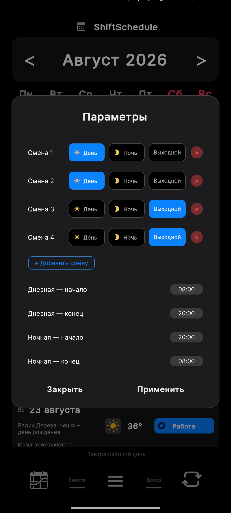
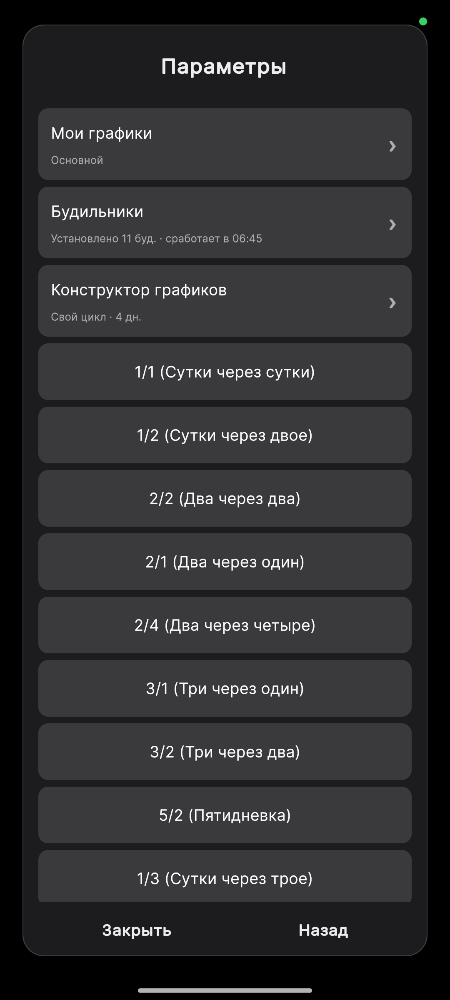
Конструктор графиков
Если ваш график не укладывается в простые пресеты — рваный, вахтовый, с чередованием дневных и ночных смен — используйте конструктор: Настройки → График → «Конструктор графиков». Это не узкая функция «для тех, кто работает и днём и ночью», а полноценный конструктор любого повторяющегося цикла; под названием плитки видно состояние, например «Свой цикл · 4 дн.».
Каждому слоту цикла назначается тип: День, Ночь или Выходной — слотов можно добавить сколько угодно. Внизу экрана задаётся время начала и конца дневной и ночной смены — в том числе через полночь, вплоть до полных 24 часов.
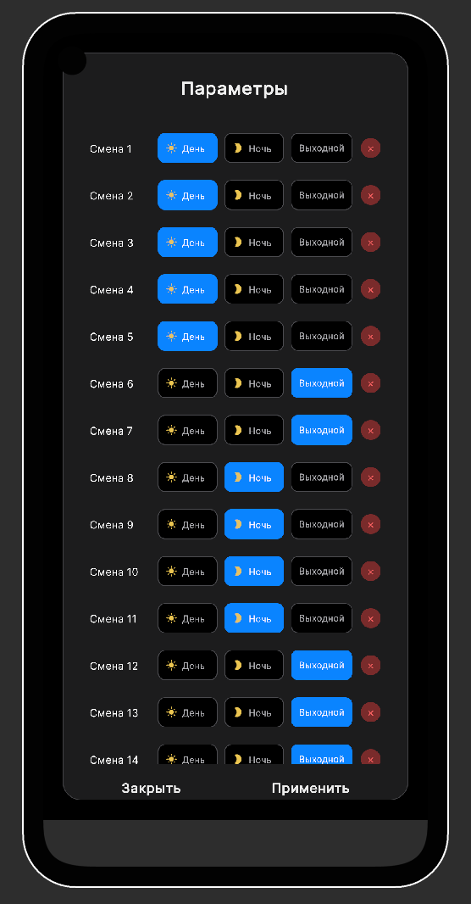
Пример 1 — обычный «сутки/трое» через конструктор
Тот же результат, что даёт готовый пресет «1/3», можно собрать и вручную: один слот «День», три слота «Выходной», а в поле времени дневной смены указать одинаковые часы начала и конца (например 08:00 и 08:00) — тогда слот станет полными сутками, а не 12-часовой сменой.
Пример 2 — сложный цикл с разными сменами
Реальный пример: 5 дневных смен + 2 выходных + 4 ночных смены + 10 выходных — цикл из 21 слота, где рабочий период неоднородный (сначала день, потом ночь) и выходные есть не только между циклами, но и внутри рабочего периода.
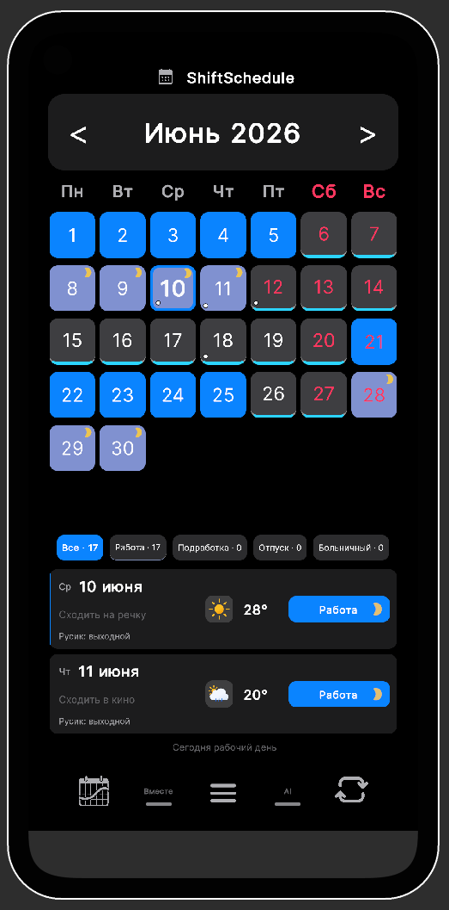
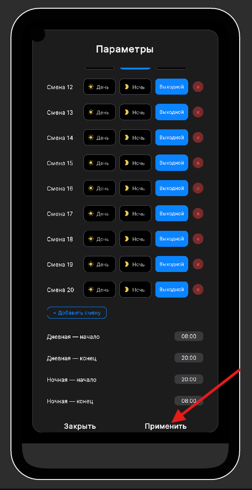
После сборки цикла вернитесь в календарь, нажмите на первый рабочий день и выберите «1-й рабочий день» — это якорная дата, от которой считается весь цикл.
Если в конкретный день цикл нарушается — вышли на внеплановую смену или, наоборот, отменили рабочий день — нажмите на этот день в календаре и выберите статус вручную. Ручные правки имеют приоритет над циклом и не сбивают расчёт для остальных дней (подробнее — раздел 4).
«Вместе» — график с партнёромPRO
Добавьте супруга, партнёра или коллегу — и видите его выходные прямо на своём календаре. Дни, когда вы оба отдыхаете, подсвечиваются цветным маркером — причём не только на вкладке «Вместе», но и прямо на главном экране календаря.
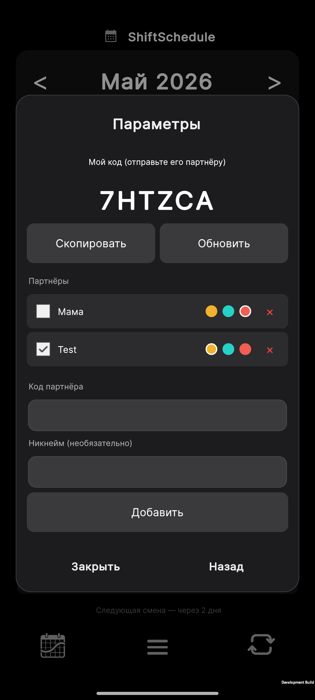
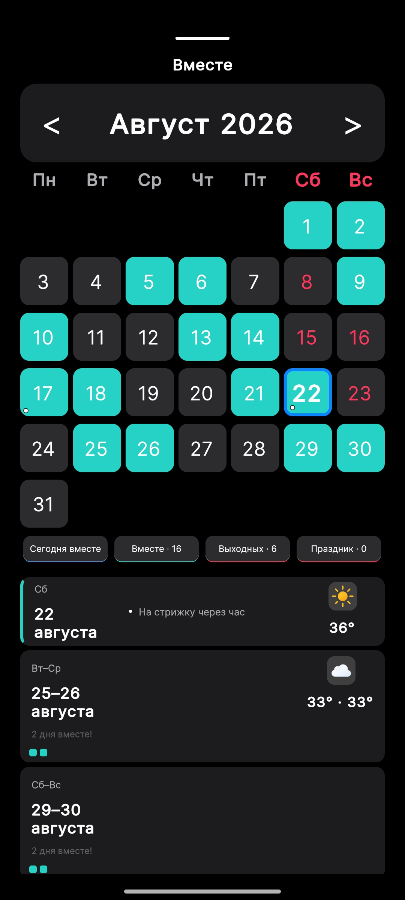
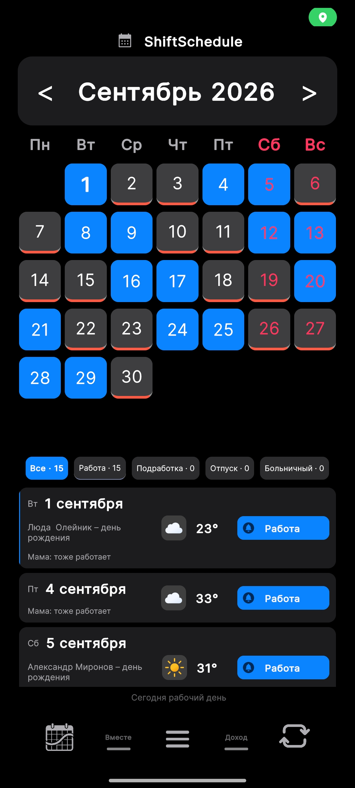
Цвет маркера общих выходных настраивается — на скриншотах он показан по-разному (бирюзовый на вкладке «Вместе», красный на главном экране): это два разных пользовательских выбора цвета, а не расхождение в поведении.
- Подтвердите e-mail в Настройки → Синхронизация → Аккаунт — без подтверждения код партнёра не активируется.
- Откройте вкладку «Вместе» (потяните нижнюю панель вкладок вверх свайпом), скопируйте свой 6-значный код и отправьте партнёру любым способом.
- Партнёр вводит код в поле «Код партнёра», при желании указывает никнейм и нажимает «Добавить».
Активен только один партнёр — при подключении нового предыдущий отключается автоматически, чтобы цвета на календаре не смешивались. Добавить можно нескольких и переключаться между ними. Расписание партнёра обновляется само раз в 30 секунд — тот же цикл сразу присылает push-уведомление, если у партнёра изменился график (появился новый общий выходной или расписание просто изменилось). Либо нажмите «Синхронизировать сейчас» для мгновенного обновления вручную.
Календарь и ручные правки
Любой день можно скорректировать вручную — это не сбрасывает основной цикл, а только переопределяет конкретный день.
- Нажмите на день в календаре — откроется карточка дня.
- Выберите статус: Работа, Подработка, Выходной, Отпуск или Больничный (для Работы и Подработки — ещё и День или Ночь).
- Для подработки задайте её длительность в строке «Часы подработки»: кнопки «−» и «+» меняют значение с шагом 0,5 ч, от 0,5 до 24 ч, а если удерживать кнопку, счёт ускоряется. Пока часы не заданы, стоит прочерк «—», и действуют общие часы Дня или Ночи из настроек. Если день уже отмечен подработкой, часы сохраняются сразу; на другом дне сначала задайте часы, потом нажмите «Подработка» (День или Ночь). Выбрав диапазон дней (шаг ниже), вы зададите те же часы каждому дню диапазона.
- Нажмите «Заметка», чтобы добавить текст к этому дню — он будет виден в списке смен. Заметке можно задать время оповещения — в указанный момент придёт push-уведомление с её текстом (например, напоминание «через 2 часа стрижка»).
- Чтобы применить статус сразу к нескольким дням — нажмите и удерживайте день (~0.5 сек), затем отметьте второй день границей диапазона.
Под календарём всегда видна статистика за текущий месяц: количество рабочих дней и дней отдыха.
Дневная и ночная подработка различаются цветом: дневная светлее, ночная темнее, а в углу ячейки ночной подработки стоит золотая луна.
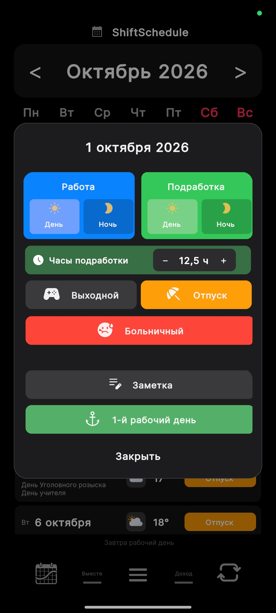
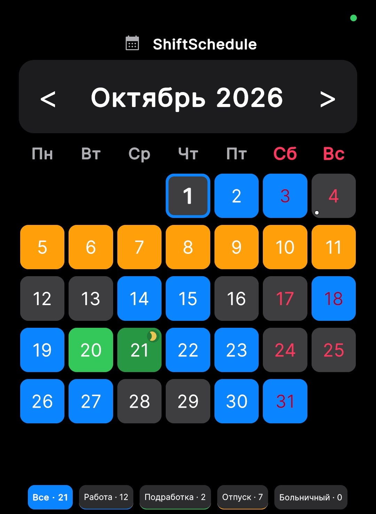
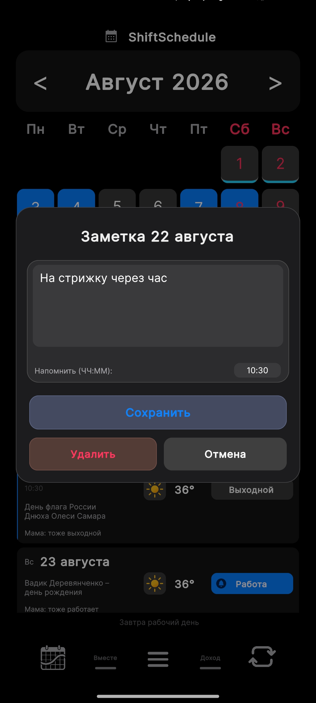
Подработка может быть короче или длиннее обычной смены: задайте ей свои часы, и они войдут в расчёт дохода (раздел 7). Это удобно, например, при суточном графике, когда подработка короче суток. Часы нужны именно для расчёта: время будильников и событий в системном календаре по-прежнему берётся из общего времени Дня и Ночи. Если сменить статус дня на другой, часы сбрасываются. Часы сохраняются вместе с расписанием, в том числе в облаке при входе в аккаунт (раздел 8); партнёру во «Вместе» они не передаются.
Второй графикPRO
Если вы иногда работаете на второй работе по собственному регулярному циклу — добавьте его отдельным графиком. Приложение учитывает оба расписания одновременно.
- Откройте Меню (☰) → Параметры → График → Мои графики.
- Добавьте новый график: задайте Название (например «Доставка»), дату начала цикла и количество рабочих/выходных дней.
- Переключателем «Показывать в основном графике» можно выводить дни второго графика прямо на главный календарь, а не только в его собственной вкладке.
- «Произвольный выбор дней» — вместо регулярного цикла рабочие дни второго графика можно отметить вручную.
- Сохраните — в дни, когда активен второй график, в ячейке появится значок портфеля.
Это отдельный регулярный цикл, а не разовая «Подработка» из раздела 4. Если по основному графику день выходной, но активен второй — партнёр видит, что вы работаете, и общий выходной в этот день не засчитывается.
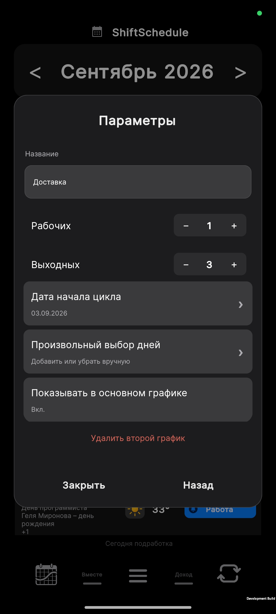
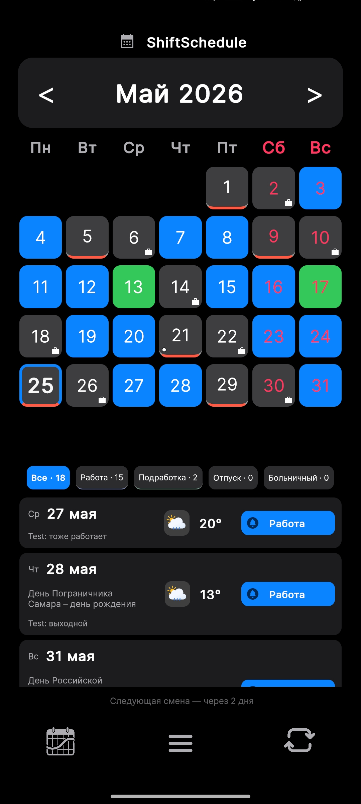
Будильники
Приложение расставляет системные будильники на ближайшие рабочие дни автоматически — время подстраивается под День/Ночь. Будильники «умные» и следят за статусом дня в обе стороны: если день отмечен как «Отпуск» или «Больничный» — будильник на это утро снимается сам; а если, наоборот, на выходной день поставить статус «Подработка» — будильник на это утро появится сам, вручную ничего переставлять не нужно.
- Откройте Настройки → График → Будильники и включите переключатель.
- Настройте время упреждения (5–240 минут) — за сколько до начала смены сработает будильник.
- Выберите горизонт — на 7, 14 или 30 дней вперёд — и нажмите «Установить будильники». Рядом со сменой в списке появится значок колокольчика.
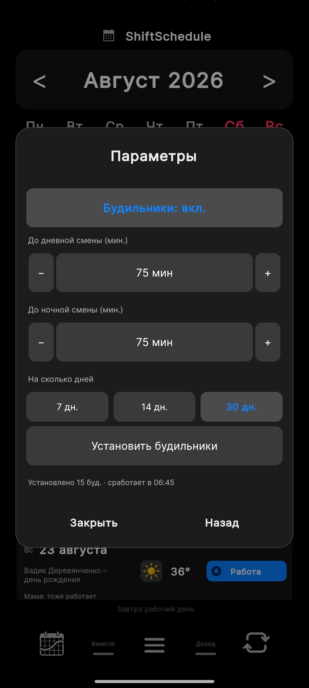
Чаще всего дело в настройках батареи. Три шага: (1) Автозапуск — Настройки → Приложения → ShiftSchedule → Автозапуск → включить (без этого будильник не проснётся, если приложение закрыто); (2) Батарея — Настройки → Батарея → Приложения → ShiftSchedule → «Без ограничений»; (3) на Android 12+ система может отдельно запросить разрешение «Будильники и напоминания» — разрешите его.
Будильники не продлеваются сами — на выбранный горизонт (7/14/30 дней) сразу ставится вся пачка будильников целиком; когда до конца этой пачки остаётся один день, придёт push-уведомление «Будильники заканчиваются завтра» — это сигнал зайти в приложение и нажать «Установить будильники» ещё раз.
После перезагрузки телефона Android по умолчанию удаляет все запланированные будильники — но приложение автоматически пытается незаметно перезапустить само себя сразу при включении телефона, без вашего участия. На устройствах, где разрешён автозапуск в фоне (например Xiaomi/MIUI), это срабатывает, и будильники пересчитываются сами. Если автозапуск для приложения запрещён (так по умолчанию на Android 10+) — вместо этого придёт уведомление «Телефон перезагружен — откройте приложение», и будильники пересчитаются при следующем открытии.
Своя мелодия будильника — настраивается не в приложении, а в системных настройках телефона: Настройки телефона → Приложения → ShiftSchedule → Уведомления — там задаются звук и вибрация для уведомлений приложения.
Не появился значок колокольчика — он показывается только рядом с рабочими сменами, не с выходными. Проверьте якорную дату и статус ближайших дней; если всё верно — нажмите «Установить будильники» ещё раз.
Уведомление о предстоящей смене
Отдельная от будильника функция — тихое уведомление о приближающейся смене, без звука будильника. Включается в Настройки → Уведомления: нажмите «Включить уведомления» и выберите время упреждения — 6, 12 или 24 часа.
Отсчёт идёт от полуночи дня смены, а не от времени её начала: например, при упреждении в 12 часов уведомление придёт в полдень накануне смены, независимо от того, на какое время она сама поставлена.
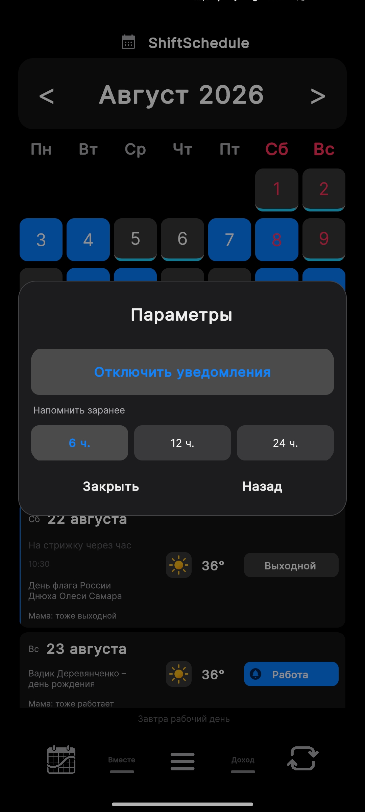
Доход и расчёт зарплатыPRO
Автоматический расчёт заработка по типу смены, с надбавками и вычетами. Откройте вкладку свайпом вверх по нижней панели, затем «Настроить расчёт».
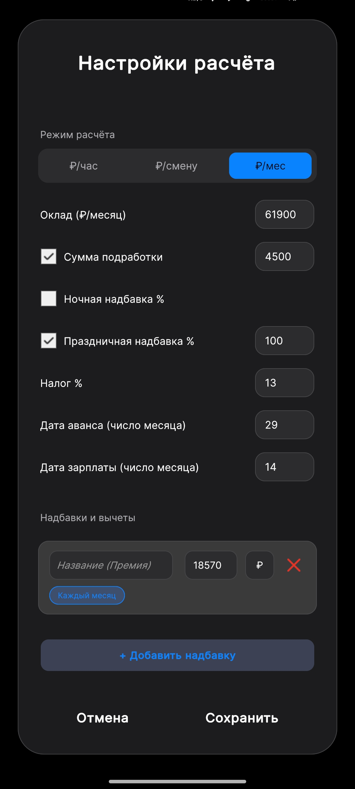
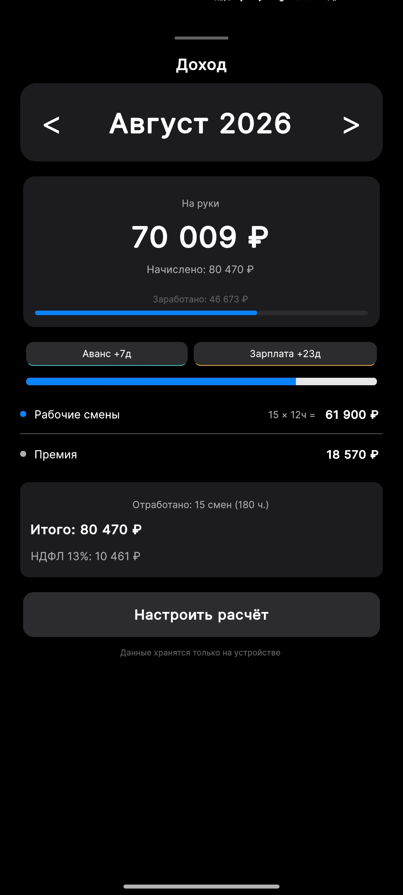
- Режим расчёта — ₽/час, ₽/смену или ₽/месяц (оклад).
- Ночная надбавка % — доплата сверх ставки за каждую ночную смену (и за ночные подработки тоже). Базовая ставка за день и ночь одинаковая, как по Трудовому кодексу — разница именно в этой надбавке.
- Праздничная надбавка % — доплата за смены в государственные праздники.
- Надбавки и вычеты — премии/штрафы. У каждой записи два переключателя: сумма в ₽ или в %, и повтор — «Один раз» (только в выбранном месяце) или «Каждый месяц» (применяется автоматически, не нужно добавлять заново каждый раз).
- Дата аванса / зарплаты — число месяца для отображения ближайших выплат.
После любых изменений нажмите «Сохранить» внизу окна.
Как считается подработка
Дни со статусом «Подработка» автоматически учитываются в расчёте. По умолчанию — по той же ставке, что обычная смена; если подработка оплачивается иначе (например, в полуторном размере) — включите чекбокс «Сумма подработки» и укажите свою сумму: в режиме ₽/час это ставка за час подработки, в режимах ₽/смену и ₽/мес — сумма за одну подработку.
В режиме ₽/час подработка и ночная надбавка за ночные подработки считаются по часам, которые вы задали каждому дню (раздел 4); если часы не заданы — по общим часам Дня или Ночи. В разбивке дохода строки «Подработка» и «Ночная надбавка» показывают эти часы, например «12 ч = …». В режимах ₽/смену и ₽/мес подработка оплачивается за смену, поэтому часы на сумму не влияют.
Все данные о зарплате (ставки, надбавки, суммы) хранятся только на устройстве и никуда не отправляются — облачная синхронизация (раздел 8) распространяется только на график. Часы подработки — часть расписания, а не денежные данные, поэтому они сохраняются в облаке вместе с графиком.
Синхронизация, аккаунт, резервная копияPRO
Без аккаунта расписание хранится только на телефоне — при поломке, потере или переустановке оно пропадёт без возможности восстановления. Создать аккаунт можно бесплатно — вход по e-mail и паролю, либо одной кнопкой через Yandex ID или Google. Сама облачная синхронизация и резервная копия — уже PRO-функция, но первые 14 дней после входа она работает бесплатно, как пробный период.
- Откройте Настройки → Синхронизация → Аккаунт.
- Зарегистрируйтесь по e-mail и паролю или войдите одной кнопкой через Yandex ID / Google.
- Если регистрировались по e-mail — подтвердите почту по письму (проверьте папку «Спам»): это нужно и для активации кода партнёров, и на случай восстановления пароля — если адрес ненастоящий, восстановить забытый пароль в будущем будет неоткуда.
- Нажмите «Синхронизировать сейчас» — создастся первая резервная копия в облаке.
При смене телефона войдите в тот же аккаунт и нажмите «Скачать из облака» — все данные восстановятся за секунды. Между устройствами расписание синхронизируется само раз в 30 секунд после изменений — тот же механизм, что и обновление расписания партнёра (раздел 3).
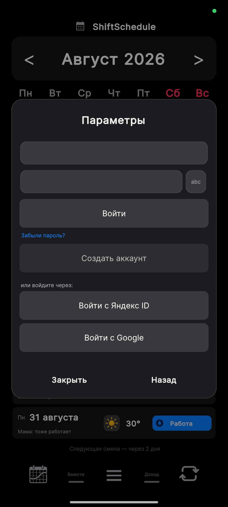
Темы, стили и погода
- Тема — Светлая, Тёмная или Системная (подстраивается под Android).
- Стиль — 8 вариантов оформления: Graphite Bloom, Moonstone Calm и Warm Slate бесплатны; Glass & Air, iOS, Aurora, Nordic и Forest — PRO.
- Погода — «Все дни» или «Только рабочие»: температура и иконка появятся прямо в списке смен. Бесплатно для всех, нужно разрешение на геолокацию. По умолчанию город определяется автоматически по GPS; в настройках погоды можно задать город вручную. Если пропал интернет — прогноз не ломается навсегда, а обновится, как только связь вернётся.
- Праздники — государственный праздник показывается прямо под датой в списке смен. Страна определяется автоматически по региону телефона; при желании её можно задать вручную из списка — поддерживается 28+ стран.
Два условия: разрешение на геолокацию (Настройки телефона → Приложения → ShiftSchedule → Разрешения → Местоположение) и подключение к интернету — прогноз загружается из сети. Если оба условия выполнены, а погоды всё равно нет — напишите нам с указанием версии приложения.
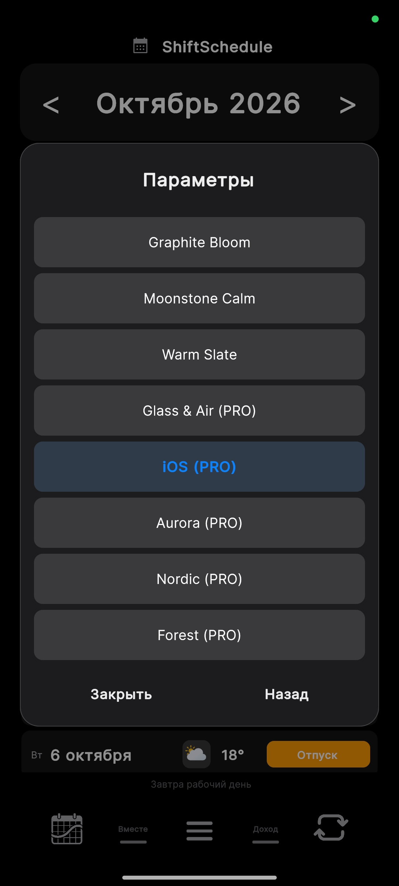
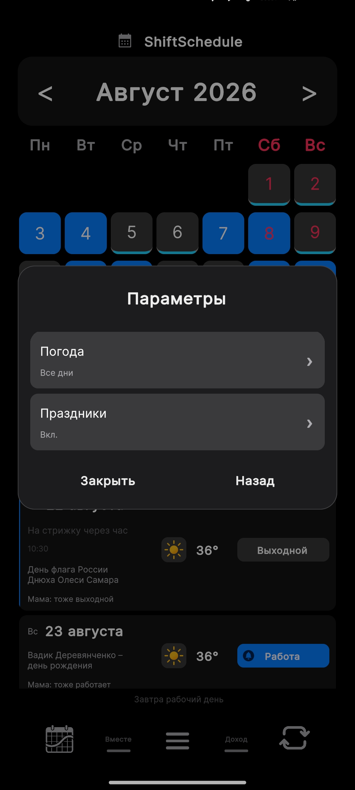
Экспорт в системный календарь
Бесплатная функция: приложение выгружает ваши смены и заметки в календарь телефона (Google, Samsung или любой другой, доступный для записи), и они видны рядом с остальными делами. Включается в Настройки → Синхронизация → Календарь устройства: приложение запросит доступ к календарю, вы выбираете календарь, куда выгружать смены, и режим работы.
- Экспорт — односторонний режим: приложение только выгружает смены и заметки в выбранный календарь («Рабочая смена», «Подработка», «Отпуск», «Больничный»; заметка — отдельным событием). Изменения, сделанные в самом календаре, в приложение не возвращаются, а события других календарей приложение не читает.
- Двусторонняя — режим по умолчанию: делает всё то же, что «Экспорт», и дополнительно читает события из календарей телефона (например, дни рождения и встречи) и показывает их под датой в списке смен — до двух событий, остальные свёрнуты в «+N». Это только просмотр: в расписание эти события не попадают, а правки в приложении «Календарь» обратно в график не переносятся.
- Если календарь выключить или выбрать другой, приложение убирает из него только свои записи — личные события не трогаются, вручную чистить ничего не нужно.
- Если выбранный календарь синхронизируется с облаком Google или Samsung через настройки самого Android — экспортированные смены появятся и там на уровне системы, это не отдельная интеграция именно с Google или Samsung.
При включённом календаре полный пересчёт графика (например, смена якорной даты) может ощущаться с небольшой задержкой — приложение заново переэкспортирует смены примерно на год вперёд. На данные это не влияет, только на скорость отклика в момент пересчёта.
Навык Алисы — график голосом
Навык «Мой график смен» для Яндекс Алисы отвечает на вопросы о вашем графике голосом — на колонках, в телефоне и на умных экранах: работаете ли вы сегодня и завтра, когда следующий выходной и следующая смена, сколько смен осталось на неделе и в месяце, когда отпуск. Ещё можно продиктовать заметку на нужный день — она появится в приложении.
Сам навык Алисы бесплатный — за его использование в Яндексе платить не нужно. Но чтобы навык узнал ваш график, ему нужен ваш 6-значный код, а код и отправка графика в облако входят в PRO (первые 14 дней они доступны бесплатно). После пробного периода без PRO код в приложении недоступен, а уже подключённый навык перестаёт получать свежие данные.
- Войдите в аккаунт — Настройки → Синхронизация → Аккаунт. График для Алисы отправляется в облако при синхронизации.
- Скопируйте свой 6-значный код — тот же, что используется в «Вместе» (раздел 3): Настройки → Синхронизация → Партнёры → «Скопировать».
- Скажите Алисе «Алиса, запусти навык Мой график смен» и назовите код вслух — после этого навык знает ваш график.
- Спрашивайте, например: «Я сегодня работаю?», «Следующий выходной», «Сколько смен в этом месяце?», «Когда отпуск?», «Сделай заметку».
Навык читает график из облака: приложение хранит там ближайшие 60 дней. Если не открывать его дольше, ответы про сегодняшний день могут быть неточными. Если вы сменили код в приложении — скажите Алисе «сброс» и назовите новый.
Полный список голосовых команд — в статье «Голосовые команды Алисы».
Home Assistant
Бесплатная интеграция. Передавайте статус текущего дня в Home Assistant как сенсор — используйте в автоматизациях: включайте будильник в рабочие дни, меняйте освещение в выходные, шлите уведомления.
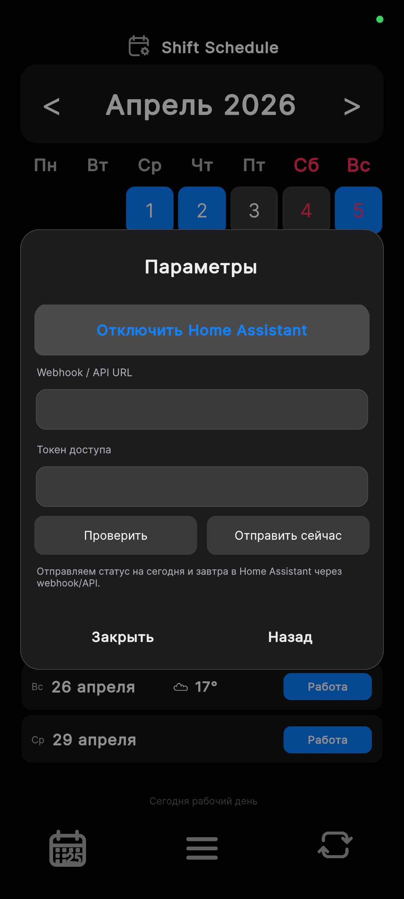
- В Home Assistant: Профиль → Долгосрочные токены доступа → создать новый токен (показывается один раз, скопируйте сразу).
- В приложении: Настройки → Синхронизация → Home Assistant.
- Введите URL вебхука:
http://192.168.1.100:8123/api/webhook/shift_schedule(локально) илиhttps://myhome.duckdns.org/api/webhook/shift_schedule(внешний доступ) — гдеshift_scheduleэтоwebhook_idиз пакета ниже. - Вставьте токен доступа, задайте имя сенсора (например
shift_schedule— появится какsensor.shift_schedule) и нажмите «Сохранить».
Пример автоматизации: триггер — sensor.shift_schedule меняет
состояние на work, действие — включить умный будильник; на
day_off — выключить.
Готовый пакет для Home Assistant Сущности, автоматизация и сенсоры одним файлом — нажмите, чтобы развернуть
Шаг 1 — разрешите пакеты в configuration.yaml
# configuration.yaml
homeassistant:
packages: !include_dir_named packages
Шаг 2 — сохраните как packages/shift_schedule.yaml
# packages/shift_schedule.yaml — справочный пакет ShiftSchedule. # Создаёт сущности, принимает данные через вебхук и формирует русскоязычные сенсоры. shift_schedule: input_text: shift_today_status: name: Shift Today Status max: 50 icon: mdi:calendar-today shift_tomorrow_status: name: Shift Tomorrow Status max: 50 icon: mdi:calendar-arrow-right shift_next_work_date: name: Shift Next Work Date max: 50 icon: mdi:calendar-check shift_next_work_status: name: Shift Next Work Status max: 50 icon: mdi:briefcase-clock shift_last_update: name: Shift Last Update max: 80 icon: mdi:clock-check input_boolean: shift_work_today: name: Shift Work Today icon: mdi:briefcase shift_work_tomorrow: name: Shift Work Tomorrow icon: mdi:briefcase-clock automation: - alias: Shift Schedule Webhook id: shift_schedule_webhook mode: restart trigger: - platform: webhook webhook_id: shift_schedule # можно заменить на любое уникальное название allowed_methods: - POST action: - service: input_text.set_value target: entity_id: input_text.shift_today_status data: value: "{{ trigger.json.today_status | default('unknown') }}" - service: input_text.set_value target: entity_id: input_text.shift_tomorrow_status data: value: "{{ trigger.json.tomorrow_status | default('unknown') }}" - service: input_text.set_value target: entity_id: input_text.shift_next_work_date data: value: "{{ trigger.json.next_work_date | default('') }}" - service: input_text.set_value target: entity_id: input_text.shift_next_work_status data: value: "{{ trigger.json.next_work_status | default('') }}" - service: input_text.set_value target: entity_id: input_text.shift_last_update data: value: "{{ trigger.json.updated_at | default('') }}" - choose: - conditions: "{{ trigger.json.is_work_today | default(false) }}" sequence: - service: input_boolean.turn_on target: entity_id: input_boolean.shift_work_today default: - service: input_boolean.turn_off target: entity_id: input_boolean.shift_work_today - choose: - conditions: "{{ trigger.json.is_work_tomorrow | default(false) }}" sequence: - service: input_boolean.turn_on target: entity_id: input_boolean.shift_work_tomorrow default: - service: input_boolean.turn_off target: entity_id: input_boolean.shift_work_tomorrow template: - sensor: - name: Shift Today Status RU unique_id: shift_today_status_ru state: > {% set map = {'Work':'Работа','Rest':'Выходной','Extra':'Подработка','Vacation':'Отпуск','Sick':'Больничный'} %} {{ map.get(states('input_text.shift_today_status'), states('input_text.shift_today_status')) | trim }} icon: > {% set s = states('input_text.shift_today_status') %} {% if s == 'Work' %}mdi:briefcase {% elif s == 'Extra' %}mdi:briefcase-plus {% elif s == 'Vacation' %}mdi:beach {% elif s == 'Sick' %}mdi:medical-bag {% else %}mdi:sofa{% endif %} - name: Shift Tomorrow Status RU unique_id: shift_tomorrow_status_ru state: > {% set map = {'Work':'Работа','Rest':'Выходной','Extra':'Подработка','Vacation':'Отпуск','Sick':'Больничный'} %} {{ map.get(states('input_text.shift_tomorrow_status'), states('input_text.shift_tomorrow_status')) | trim }} icon: > {% set s = states('input_text.shift_tomorrow_status') %} {% if s == 'Work' %}mdi:briefcase {% elif s == 'Extra' %}mdi:briefcase-plus {% elif s == 'Vacation' %}mdi:beach {% elif s == 'Sick' %}mdi:medical-bag {% else %}mdi:sofa{% endif %} - name: Shift Next Work Status RU unique_id: shift_next_work_status_ru state: > {% set map = {'Work':'Работа','Rest':'Выходной','Extra':'Подработка','Vacation':'Отпуск','Sick':'Больничный'} %} {{ map.get(states('input_text.shift_next_work_status'), states('input_text.shift_next_work_status')) | trim }} icon: > {% set s = states('input_text.shift_next_work_status') %} {% if s == 'Work' %}mdi:briefcase {% elif s == 'Extra' %}mdi:briefcase-plus {% elif s == 'Vacation' %}mdi:beach {% elif s == 'Sick' %}mdi:medical-bag {% else %}mdi:sofa{% endif %} - name: Shift Next Work Date RU unique_id: shift_next_work_date_ru icon: mdi:calendar-arrow-right state: > {% set d = states('input_text.shift_next_work_date') %} {% if d and d | length == 10 %} {% set today = now().strftime('%Y-%m-%d') %} {% set tomorrow = (now() + timedelta(days=1)).strftime('%Y-%m-%d') %} {% set day_after = (now() + timedelta(days=2)).strftime('%Y-%m-%d') %} {% if d == today %}Сегодня {% elif d == tomorrow %}Завтра {% elif d == day_after %}Послезавтра {% else %} {% set parts = d.split('-') %} {% set months = ['января','февраля','марта','апреля','мая','июня','июля','августа','сентября','октября','ноября','декабря'] %} {{ parts[2] | int }} {{ months[parts[1] | int - 1] }} {% endif %} {% else %}—{% endif %}
Шаг 3 — перезапустите Home Assistant
- Перезапустите HA: Настройки → Система → Перезапустить.
- Проверьте, что появились сущности
input_text.shift_today_statusи другие. - В приложении укажите URL вашего HA и
webhook_idиз пакета (shift_scheduleпо умолчанию). - Откройте приложение — данные придут в HA автоматически.
PRO и тарифы
PRO — разовая покупка, не подписка. После первого входа в аккаунт доступно 14 дней PRO бесплатно со всеми функциями; по истечении пробного периода базовые функции (календарь, ручные отметки, конструктор графиков) остаются без ограничений.
| Функция | Бесплатно | PRO |
|---|---|---|
| Календарь, ручные правки, конструктор графиков | ✓ | ✓ |
| Будильники | ✓ | ✓ |
| Погода на карточках смен | ✓ | ✓ |
| Экспорт в системный календарь | ✓ | ✓ |
| Home Assistant | ✓ | ✓ |
| Стили: Graphite Bloom, Moonstone Calm, Warm Slate | ✓ | ✓ |
| «Вместе» — синхронизация с партнёром | — | ✓ |
| «Доход» — расчёт зарплаты | — | ✓ |
| Облачная синхронизация и резервная копия | — | ✓ |
| Код для подключения навыка Алисы (сам навык бесплатный) | — | ✓ |
| Второй график | — | ✓ |
| Стили: Glass & Air, iOS, Aurora, Nordic, Forest | — | ✓ |
- Как купить — в приложении нажмите «Купить PRO», откроется оплата через RuStore.
- Купили на сайте — после оплаты через ЮKassa придёт промокод: Настройки → «ShiftSchedule PRO» → «Ввести промокод».
- PRO пропал после переустановки — Настройки → PRO → «Восстановить покупку», убедитесь, что вы вошли в тот же аккаунт RuStore, через который оплачивали. Нужен интернет, восстановление бесплатное.
Частые вопросы
Приложение работает без интернета?
Да. Календарь, ручные отметки и заметки работают полностью офлайн. Интернет нужен только для облачной синхронизации, прогноза погоды и покупки/восстановления PRO.
Приложение запрашивает много разрешений — зачем?
Календарь — для экспорта смен в системный календарь (по запросу). Уведомления — для напоминаний о начале смены (по запросу). Геолокация — только для прогноза погоды (по запросу, можно отказать).
Зачем создавать аккаунт, если я пользуюсь один?
Без аккаунта расписание хранится только на телефоне — при его поломке, потере или переустановке приложения все данные пропадут без возможности восстановления. Аккаунт создаётся бесплатно и даёт резервную копию в облаке и восстановление при смене телефона — сама синхронизация бесплатна первые 14 дней, дальше нужен PRO.
Поддерживается ли iPhone / iOS?
Пока нет — приложение доступно только для Android через RuStore. iOS-версия рассматривается, но конкретных сроков нет.